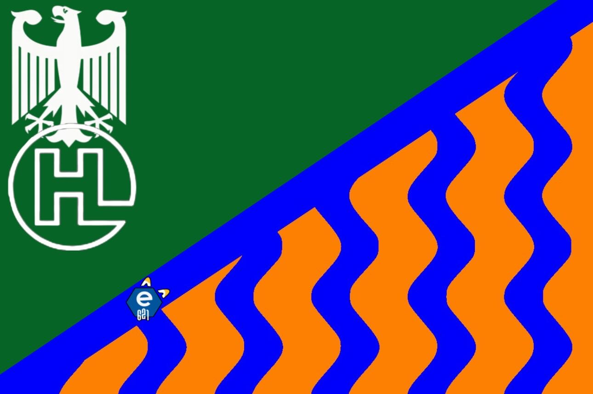

What is Hakam
Hakam is a dialect that originated in the classrooms at the German "Schloss Hohenwehrda". It's more than just a dialect. Hakam is love, Hakam is life. Even if some words seem just a little strange, most of the words in our beautiful Hakam language are actually quite common in everyday life. If our words seem a little strange to you, We can't blame you too much. Brilliant ideas always seem radical at first, but if you think rationally, you'll quickly realize that it makes perfect sense to use the words of our language to establish them socially. Furthermore, the Republic of Hakam is a culturally diverse republic that will sooner or later establish itself as its own microstate. So be modern and become a citizen of the Republic of Hakam today.
The flag
The official flag of the Hakam language is shown above. The orange is the official color, and the blue symbolizes the tears that sometimes flow in our lives. The Hohenwehrda green and the H-symbol symbolize the proximity to the "Lietz Internat Hohenwehrda". But it is precisely from this small village that the magnificent Hakam language, along with its culture and traditions, originates. The fight against the widespread culture of the despots on Hohenwehrda continues until the independence of the Hakam Republic will establish itself.
History of the flag
Although our nation is so young, it already had a flag change on the 39th of Sobek 383. The differences are rather minor, the biggest being the disappearance of the eagle from our flag. Furthermore, a logo from the magnificent website e621 had to be removed. Our legal department advised us to remove the logo. But all our citizens still love the site. Most recently, the H-symbol was slightly modified and moved to the position of the eagle. Because some people liked the old flag very much, you can see it here one last time:
